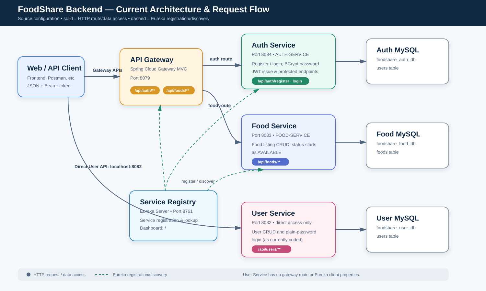

1. પ્રોજેક્ટનો સાર
FoodShare એક Spring Boot microservices backend છે. હાલની codebaseમાં Authentication, Food listing, User management, API Gateway અને Eureka Service Registry એમ પાંચ runtime modules છે. દરેક business service અલગ MySQL database વાપરે છે.
application.properties પર આધારિત છે. Gateway નું configured port 8079 છે (start scriptમાં લખાયેલ 8080 નહીં). Auth Service 8084 છે. donation-service start scriptમાં ઉલ્લેખાય છે, પરંતુ આ repositoryમાં તેનો module નથી.2. Architecture / Flow Diagram

Gateway મારફતે Auth અને Food API ઉપલબ્ધ છે. User API સીધો http://localhost:8082 પર ચાલે છે, કારણ કે તેની Gateway route અને Eureka settings નથી.
3. Service overview
| Service | Port | જવાબદારી | Discovery / access | Database |
|---|---|---|---|---|
| service-registry | 8761 | Eureka registry/dashboard | Standalone | — |
| api-gateway | 8079 | Path-based routing using lb:// | Eureka client | — |
| auth-service | 8084 | Register, login, BCrypt, JWT | AUTH-SERVICE through Gateway | foodshare_auth_db |
| food-service | 8083 | Food listing CRUD and availability lookup | FOOD-SERVICE through Gateway | foodshare_food_db |
| user-service | 8082 | Separate user CRUD/login | Direct only in current config | foodshare_user_db |
4. Request flow
A. Auth register / login
- Client gateway URL પર
/api/auth/registerઅથવા/api/auth/logincall કરે છે. - Gateway Eureka પાસેથી
AUTH-SERVICEશોધી Auth Serviceને request આપે છે. - Register સમયે email unique check થાય છે; password BCryptથી hash થાય છે; user Auth databaseમાં save થાય છે.
- Register/login સફળ થાય તો signed JWT મળે છે. JWTમાં subject=email,
userId,role, issued-at અને expiry હોય છે.
B. Food CRUD
- Client
/api/foods/**gateway URL પર call કરે છે. - Gateway request
FOOD-SERVICEસુધી route કરે છે. - Controller validation પછી FoodServiceImpl repository મારફતે
foodstable વાંચે/લખે છે. - નવી food record નો status
AVAILABLEઅનેcreatedAtઆપમેળે set થાય છે.
C. User management
હાલ Client સીધું http://localhost:8082/api/users/** call કરે છે. User Service Auth Service સાથે data અથવા token શેર કરતી નથી; તે અલગ users table વાપરે છે.
5. Base URLs અને routing
| કામ | Preferred current URL | Direct service URL |
|---|---|---|
| Registry dashboard | http://localhost:8761/ | — |
| Auth | http://localhost:8079/api/auth | http://localhost:8084/api/auth |
| Food | http://localhost:8079/api/foods | http://localhost:8083/api/foods |
| User | Not routed by Gateway | http://localhost:8082/api/users |
6. Auth Service API
Public endpoints બંને endpoints @Valid request validation કરે છે. Response body AuthResponse છે.
| Method | Endpoint | Success | વિગત |
|---|---|---|---|
| POST | /api/auth/register | 200 (default controller status) | નવો auth user બનાવે, BCrypt password store કરે અને JWT આપે છે. Existing email માટે token null અને message આપે છે. |
| POST | /api/auth/login | 200 | Email/password અને active flag ચેક કરે; સફળ હોય તો JWT આપે છે. |
Register request
{
"fullName": "Ravi Pandit",
"email": "ravi@example.com",
"password": "Secret@123",
"role": "DONOR"
}role values: ADMIN, DONOR, NGO, VOLUNTEER. Required: fullName, password; email email-format હોવો જોઈએ.
Login request
{ "email": "ravi@example.com", "password": "Secret@123" }Successful response
{
"token": "eyJ...",
"message": "Login Successful",
"userId": 1,
"fullName": "Ravi Pandit",
"email": "ravi@example.com",
"role": "DONOR"
}Protected Auth Service endpoint ઉમેરવામાં આવે તો header Authorization: Bearer <token> મોકલવો. Configured token expiry 86400000 ms (24 hours) છે.
7. Food Service API
Request અને response JSON છે. POST માટે controller 201 આપે છે; બાકીના successful read/update/delete operations 200 આપે છે.
| Method | Endpoint | Service operation | વિગત |
|---|---|---|---|
| POST | /api/foods | createFood | નવી food listing બનાવે; status AVAILABLE થાય છે. |
| GET | /api/foods | getAllFoods | બધી listings આપે છે. |
| GET | /api/foods/{id} | getFoodById | ID દ્વારા એક listing આપે છે. |
| GET | /api/foods/donor/{donorId} | getFoodsByDonor | donor ID પ્રમાણે listing આપે છે. |
| GET | /api/foods/available | getAvailableFoods | માત્ર status AVAILABLE વાળા records આપે છે. |
| PUT | /api/foods/{id} | updateFood | name, category, quantity, unit, expiry, address, description update કરે છે; donorId અને status બદલાતા નથી. |
| DELETE | /api/foods/{id} | deleteFood | Record delete કરે છે; response text: “Food deleted successfully”. |
Create / update request
{
"donorId": 1,
"foodName": "Vegetable Biryani",
"category": "Cooked Food",
"quantity": 12,
"unit": "plates",
"expiryTime": "2026-09-15T20:00:00",
"pickupAddress": "Navrangpura, Ahmedabad",
"description": "Freshly prepared; pickup before 8 PM"
}Required: donorId, foodName, category, quantity (> 0), unit, expiryTime, pickupAddress. Response fields: id, request fields, status, createdAt. Available status values: AVAILABLE, RESERVED, CLAIMED, EXPIRED, CANCELLED.
8. User Service API
| Method | Endpoint | Success | વિગત |
|---|---|---|---|
| POST | /api/users/register | 201 | Email અને phone unique હોવા જોઈએ; user બનાવે છે. |
| POST | /api/users/login | 200 | Email અને password compare કરે છે; token આપતું નથી. |
| GET | /api/users | 200 | બધા users. |
| GET | /api/users/{id} | 200 | ID પ્રમાણે user. |
| PUT | /api/users/{id} | 200 | profile fields update કરે; nonblank password હોય તો તેને પણ replace કરે છે. |
| DELETE | /api/users/{id} | 200 | user delete કરે છે. |
Register / update request
{
"fullName": "Ravi Pandit",
"email": "ravi@example.com",
"phone": "9876543210",
"password": "Secret@123",
"address": "Ahmedabad",
"role": "DONOR"
}Validation: fullName, email, password mandatory; email valid format; phone request level પર 10 digits. Roles: DONOR, NGO, VOLUNTEER, ADMIN. UserResponse password પાછો આપતું નથી.
9. Data model
| Database / table | મુખ્ય fields | Notes |
|---|---|---|
foodshare_auth_db.users | id, fullName, email (unique), password, role, active, createdAt | Password BCrypt hashed; active defaults true. |
foodshare_food_db.foods | id, donorId, foodName, category, quantity, unit, expiryTime, pickupAddress, description, status, createdAt | donorId foreign key તરીકે declared નથી; service તેને validate પણ કરતી નથી. |
foodshare_user_db.users | id, full_name, email (unique), phone (unique), password, address, role, created_at, updated_at | Current User Service password plain textમાં persist કરે છે. |
10. Run order
- MySQLમાં databases બનાવો:
foodshare_auth_db,foodshare_food_db,foodshare_user_db. - દરેક serviceની
application.propertiesમાં datasource credentials validate કરો. - પહેલાં
service-registryચલાવો; પછી Gateway, Auth, Food; User Service અલગ ચલાવો. - Eureka dashboardમાં AUTH-SERVICE અને FOOD-SERVICE (અને Gateway) દેખાય છે કે નહીં તે ચકાસો.
# દરેક moduleમાં અલગ terminalથી ./mvnw spring-boot:run # API example curl -X GET http://localhost:8079/api/foods/available
Note: start-all.shમાં ports outdated છે અને non-existent donation-service ચલાવવાનો પ્રયાસ છે; તેને authoritative configuration માની શકાય નહીં.
11. Current implementation gaps / security notes
- Duplicate user domains: Auth અને User services બંને પોતાની users table રાખે છે; data અને login behavior અલગ છે.
- User password security: UserServiceImpl plain-text password save/compare કરે છે. Production પહેલાં BCrypt લગાવવું જરૂરી છે.
- Authorization: Food Serviceમાં security configuration/JWT validation દેખાતી નથી; કોઈપણ caller CRUD કરી શકે છે.
- Gateway coverage: User Service માટે
/api/users/**route નથી અને Eureka client config નથી. - Errors: Food/User service ઘણા missing-resource અને duplicate cases માટે generic RuntimeException વાપરે છે; consistent HTTP error contract રાખવો સારું રહેશે.
- Secret management: JWT secret properties fileમાં છે; productionમાં environment/secret storeનો ઉપયોગ કરવો.